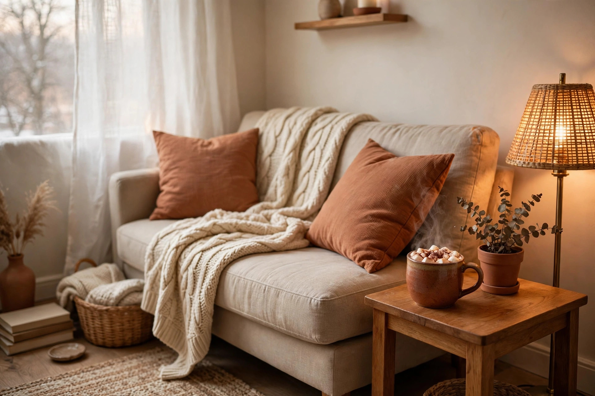

Small Living Room
Cozy Small Living Room for Winter
Intro
Winter in a small apartment is not about buying a new sofa — it is about layers. Warm light, soft textures, and one or two cosy corners can make a small living room feel like the warmest room in the house, even on the coldest evening. Every idea below is renter-friendly, works in a small space, and costs little or nothing.

1. Layer one chunky throw — $10–$20
One thick knitted throw over the arm of the sofa does more than three thin blankets. Choose cream, mustard, or terracotta so it warms up the whole room. Fold it neatly when guests come, drape it when you settle in for the evening.
2. Swap in two warm cushions — $8–$15 each
Put away the light summer cushions and bring out two in velvet, wool, or corduroy. Two is enough — a small sofa with five cushions looks crowded. Deep red, dark green, or warm brown work best in winter.
3. Warm light, not bright light — $5–$10
Swap a cool white bulb for a warm white one (2700K) in the main lamp. Add one string of warm fairy lights along a shelf or behind the curtain. Warm light makes a small room feel cosy; bright white light makes it feel like an office.
4. A rug that covers the cold floor — $20–$35
Bare floors feel cold in winter, and a rug fixes it in one move. A flat-weave rug big enough for the front legs of the sofa is enough — it does not need to cover the whole floor. Layer a small fluffy rug on top by the sofa for bare feet.
5. Block the draught at the door — $0–$8
A rolled towel or a simple draught excluder at the bottom of the front door or balcony door stops cold air and keeps the heat in. It is the cheapest way to make the room warmer, and it costs nothing if you use a towel you already own.
6. One candle corner — $5–$10
Group three candles of different heights on a tray on the coffee table or a side table. Light them in the evening instead of the ceiling light. Use battery candles if you have children or pets, or if you leave the room.
7. A hot-drink station on a tray — $0–$5
Put a tray on a side table with two mugs, a small jar of cocoa or tea, and a spoon. It looks like a café corner, and it means you never have to leave the warm sofa to make a hot drink. A tray also stops rings on the table.
8. Hang a heavy curtain — $15–$25
If your window has only a sheer curtain, add a heavier one for winter, even on a tension rod. It keeps the cold out, keeps the heat in, and makes the wall look finished. Hang it high and wide so the window still looks big.
9. Bring in one evergreen branch — $0–$5
A few sprigs of pine or eucalyptus in a jar on the shelf smell like winter and cost almost nothing. They last for weeks in water, and they are the cheapest decoration in this whole guide.
10. Clear one surface for winter evenings — $0
Pick the coffee table or the side table and clear it completely, then put back only three things: a candle, a book, and a mug. A clear surface makes a small room feel calm, and calm feels cosy.
11. A basket for blankets by the sofa — $8–$15
Keep all throws and blankets in one basket beside the sofa instead of draped over every chair. The room looks tidy, and everyone knows where to find a blanket. A woven basket also adds the texture winter rooms need.
12. Warm up the walls with one print — $5–$10
One warm-toned print — a landscape, an abstract in terracotta and cream — makes bare winter walls feel less cold. Print it at home or buy a cheap poster, and put it in a simple frame you already own.
13. Scent the room for free — $0
Simmer water with orange peel, cinnamon, and cloves on the stove for an hour before guests arrive. The whole flat smells like winter, and it costs nothing. It is the fastest way to make a small room feel inviting.
14. A reading corner with one lamp — $0–$10
Move one armchair or a pile of cushions into the warmest corner, add a small lamp and a basket of books, and you have a reading corner. In a small flat, one good corner beats a whole room you never use.
Conclusion — Start with light and one throw
If you only do three things, do these: change the bulbs to warm white, put one chunky throw on the sofa, and add a rug under your feet. The room will feel warmer tonight, without spending more than about $40.
Budget recap: Throw $10–$20, two cushions $16–$30, warm bulbs and fairy lights $5–$10, rug $20–$35, candles $5–$10. Total for the full cosy setup: about $55–$105 — and most of it can be reused every winter. The free ideas — the draught towel, the simmer pot, clearing one surface — cost $0.
Pinterest pin titles (3 fresh pins, same article, different designs)
- "Cozy Small Living Room for Winter — 14 Ideas That Actually Work" 2. "Make Your Small Living Room Cosy This Winter — Under $50" 3. "Small Apartment Winter: Warm Light + One Throw = Cosy Room"